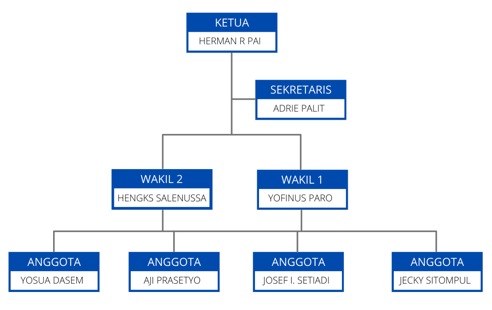

Keselamatan
Adalah Prioritas
Kami menyediakan peralatan kerja dan APD yang diperlukan untuk menjamin perlindungan dan keselamatan seluruh karyawan, sesuai standar nasional.
Patuh & Aman
Seluruh karyawan wajib patuh pada peraturan keselamatan dan komitmen perusahaan untuk menghindari kecelakaan dan potensi bahaya.
Sistem Manajemen
Sistem manajemen keselamatan melalui panduan standar, pemeriksaan dan pelaporan agar kebijakan SHE dilaksanakan dengan benar.
Berkelanjutan
Perbaikan berkelanjutan untuk memenuhi tuntutan SHE — menyediakan produk dan layanan yang lebih baik untuk masa depan.
Program K3
PT. Yawiraya

- 01Menyusun Sistem Manajemen K3 Perusahaan berdasarkan perundang-undangan dan peraturan pemerintah yang berlaku.
- 02Membentuk Panitia Pembina Keselamatan dan Kesehatan Kerja (P2K3).
- 03Mengidentifikasi bahaya, penilaian dan pengendalian risiko di tempat kerja.
- 04Membuat dan menyediakan anggaran sarana, aset K3 perusahaan dan operasional pelaksanaan K3.
- 05Pengendalian operasional dan pencegahan kecelakaan.
- 06Melakukan pembinaan pelatihan K3 dan sertifikasi.
- 07Pengendalian kesehatan dan penyakit akibat kerja.
- 08Melakukan penilaian kinerja K3 dan tindak lanjut pelaksanaan K3.
Struktur P2K3
Panitia Pembina Keselamatan dan Kesehatan Kerja bertugas memberikan saran dan pertimbangan kepada pengusaha mengenai masalah K3 di lingkungan perusahaan.
Menentukan kebijakan K3, personel penerapan K3, evaluasi kinerja K3 serta kebutuhan pelatihan seluruh personil.
Representasi manajemen dalam penerapan SMK3: identifikasi bahaya, pemantauan program, komunikasi & dokumentasi K3.
Menjamin SMK3 diterapkan di bagian masing-masing, konsultasi & partisipasi, serta pengembangan penerapan K3.
